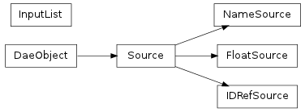

Bases: collada.DaeObject
Abstract class for loading source arrays

x.__init__(...) initializes x; see help(type(x)) for signature
Methods
| load(collada, localscope, node) | |
| save() | Put all the data to the internal xml node (xmlnode) so it can be serialized. |
Put all the data to the internal xml node (xmlnode) so it can be serialized.